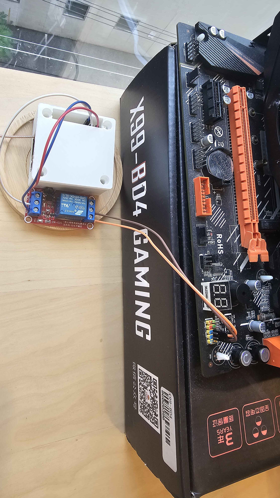
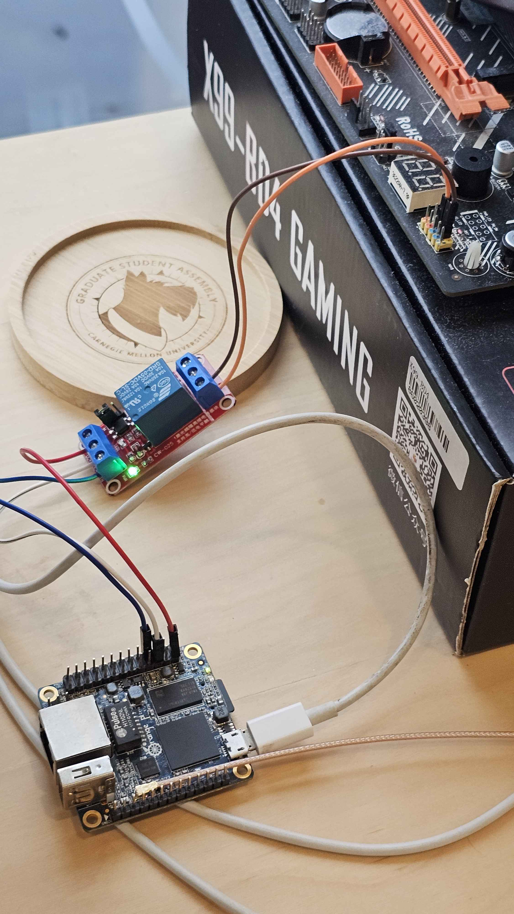

The 200 Bucks Inference Machine idles low, but it still has to be switched on before it can serve anything. Regular Wake on LAN is out for two reasons. First, the Huananzhi X99 BD4's BIOS has no Wake on LAN option at all. Second, even if it did, the apartment's shared Wi-Fi appears to isolate clients, so devices on it can't reach each other directly. A WoL broadcast can't cross Tailscale either.
So this retrofit fakes it. You tap a button in any WoL app on your phone, and the app sends a unicast magic packet over Tailscale to an Orange Pi Zero sitting next to the X99. A small listener on the Pi checks the packet, and if everything passes, it pulses a GPIO pin. That closes a relay wired across the motherboard's power switch header, and the board sees it as someone pressing the power button.
The Pi drives a single-channel 5V relay module (Songle SRD-05VDC-SL-C on a CW-025 board) from physical pin 7,
which is line 6 on gpiochip0 (PA6). The pin only outputs 3.3V at a few mA, which isn't enough to
move a relay coil directly. The module's input stage, set to trigger on high with the H jumper, takes that small
signal and switches the coil's 70 to 90 mA from the Pi's 5V pin.
The relay's COM and NO contacts are wired across the X99's PWR_SW front panel header. One header
pin is held at standby voltage through a resistor, and the other is ground. Closing the relay pulls the first
pin to ground for 300 ms, drawing well under 1 mA, which is all a power button does anyway.


A magic packet is 102 bytes: six 0xFF bytes followed by a MAC address repeated 16 times. Normally
a network card watches for its own MAC in that pattern. Here, nothing about it is special to the network. It's
an ordinary UDP payload that the Pi reads like any other data. The format is used only because every WoL app
already knows how to send it.
The MAC in the packet, 02:00:00:00:99:01, is made up. The leading 02 marks it as
locally administered, so it belongs to no real hardware. That keeps it from colliding with the X99's own WoL,
and anyone who doesn't know it can't trigger the relay.
The listener builds the exact payload it expects once at startup:
def build_expected_payload(mac):
mac_bytes = bytes.fromhex(mac.replace(":", ""))
return b"\xff" * 6 + mac_bytes * 16
wol_listener.py opens a UDP socket bound to the Pi's Tailscale IP on port 9, not
0.0.0.0. Anything sent to the Pi's LAN address on port 9 goes nowhere, because nothing is listening
there.
sock = socket.socket(socket.AF_INET, socket.SOCK_DGRAM)
sock.setsockopt(socket.SOL_SOCKET, socket.SO_REUSEADDR, 1)
sock.bind((LISTEN_ADDR, LISTEN_PORT))
The main loop blocks on recvfrom until a packet arrives, then runs it through four checks in order.
Failing any of them logs a reason and goes back to waiting.
ALLOWED_IPS, which holds the
phone and the laptop. This runs first because it's the cheapest check. Over Tailscale, a source IP can't be
faked, because WireGuard verifies each device cryptographically.
time.monotonic(), so an NTP sync or clock change can't make it jump.
while True:
data, addr = sock.recvfrom(1024)
source_ip = addr[0]
if source_ip not in ALLOWED_IPS:
log(f"ignored packet from {source_ip} (not in allowlist)")
continue
if len(data) < len(expected) or data[:len(expected)] != expected:
log(f"ignored packet from {source_ip} (MAC did not match)")
continue
now = time.monotonic()
if now - last_trigger < COOLDOWN_SECONDS:
log(f"ignored packet from {source_ip} (cooldown)")
continue
if is_x99_up():
log(f"ignored packet from {source_ip} (X99 already up)")
last_trigger = now
continue
log(f"magic packet from {source_ip}, pulsing relay")
if pulse_relay():
last_trigger = now
pulse_relay() runs pcpower through subprocess.run and checks its exit code.
The cooldown only starts on success, so if the press fails, the next tap tries again right away instead of being
ignored for a minute.
Pressing the button is one gpioset call wrapped in a small shell script:
if [ "$1" = "hold" ]; then
DURATION="5s"
else
DURATION="300ms"
fi
gpioset -c gpiochip0 -t "${DURATION},0" 6=1
6=1 drives line 6 high, and -t "300ms,0" flips it back low after 300 ms. The trailing
0 tells gpioset to exit once done. pcpower hold holds for 5 seconds
instead, which forces the PC off the same way holding the physical button would.
A systemd service starts the listener at boot, after tailscaled:
[Unit]
After=network-online.target tailscaled.service
Wants=network-online.target
[Service]
ExecStart=/usr/bin/python3 /usr/local/bin/wol_listener.py
Restart=always
RestartSec=5
User=root
[Install]
WantedBy=multi-user.target
After= only orders startup. It doesn't guarantee Tailscale has assigned its IP yet. If it hasn't,
bind fails, the script exits, and Restart=always retries every 5 seconds until it
works. The same setting restarts the listener if it ever crashes. It runs as root because port 9 is a privileged
port and GPIO access needs it.
Every check logs its own reason, so when a tap doesn't work, the journal shows which check rejected it:
journalctl -u wol-listener -fThis build lined up with CMU's 17-695 Design Patterns. The course keeps coming back to one line: the pattern is the decision, not the class diagram. Each pattern adds indirection to make one change cheaper, and if that change never comes, it's all cost. So here are the patterns this project uses, and two it deliberately doesn't.
The course defines an Adapter as converting a shape you don't own into the one you want. Neither end of this system can be changed. WoL apps speak magic packets, and the X99 only understands two header pins being shorted. The Pi, the listener, and the relay together convert one into the other. Using the magic packet format instead of something custom, like an HTTP endpoint, is what makes this an Adapter and not a new protocol: any off-the-shelf WoL app works as a client with no changes.
The relay module is the same idea at the electrical level. It converts a 3.3V, few-mA GPIO signal into a dry contact closure the motherboard can't tell apart from a real button.
"Adapter converts a shape you do not own. Facade shrinks a surface you do." gpioset has chips,
line offsets, and timing flags. pcpower shrinks all of that to the two things a caller needs:
press, or hold. The listener only knows RELAY_CMD = ["/usr/local/bin/pcpower"]. That
same command works from an SSH session, and if the relay moves to another pin, only pcpower changes.
The four checks look like a Chain of Responsibility, where each handler either rejects the packet or passes
it on. The course's "skip it when" table covers this case directly: a few rules, fixed order, none coming, so
write the if/else with early returns. That's what the loop is. Each continue is an early return,
and reading the loop top to bottom shows the order. A list of handler objects would only pay off if checks were
being added, reordered, or configured, and none of those changes is planned.
The power button is a toggle, so what a press does depends on whether the X99 is on. That sounds like a State pattern, but the listener doesn't track the machine's state at all. It asks, by pinging the X99 right before acting. Any stored copy would go stale as soon as someone pressed the physical button, the machine crashed, or the Pi rebooted. Querying the real system each time removes the sync problem entirely.
The refactoring and brownfield week asks where a system's seams are and whether you can probe them. The X99's BIOS
has no Wake on LAN option, so the board's own wake path is closed. The front panel PWR_SW header is the
seam: a documented, two-pin interface that already exists for exactly this purpose. The retrofit changes nothing
on the board. It just plugs in where a case button would.